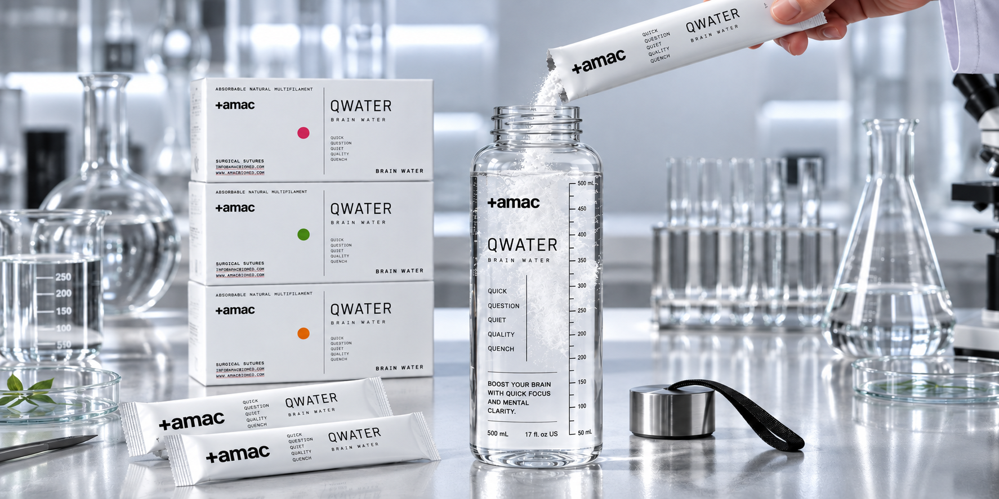
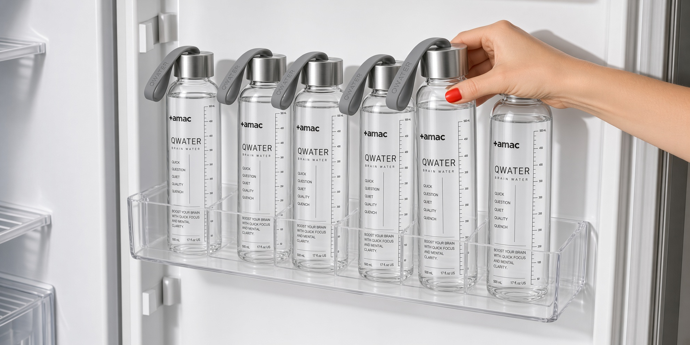
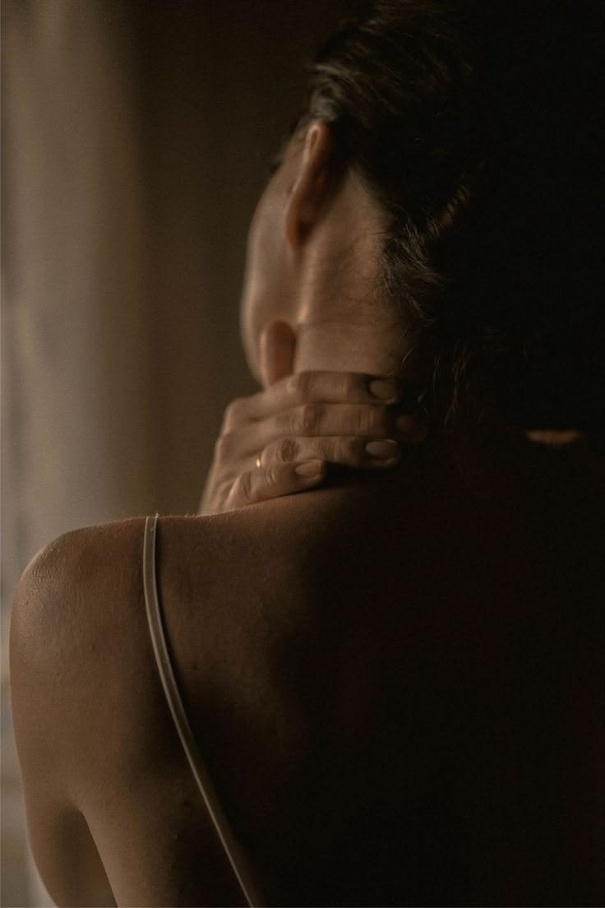

WATER, WITH
A PURPOSE
매일 마시던 물에 목적을 더했습니다.
낮에는 집중할 준비를 하고, 밤에는 멈출 준비를 합니다.
QWATER는 하루의 상태를 구분하는 가장 간단한 루틴입니다.
We gave everyday water a purpose.
Prepare to focus during the day. Prepare to slow down at night.
QWATER is a simple ritual designed to mark the different states of your day.
ONE DAY
DIFFERENT STATES.
아침에 필요한 나와 밤에 필요한 나는 다릅니다.
계속 켜져 있는 것이 성과가 아니라, 필요할 때 전환할 수 있는 것이 성과입니다.
그래서 QWATER는 하나가 아니라 두 개입니다.
What you need in the morning is different from what you need at night.
Performance is not about staying switched on forever. It is about knowing when to shift.
That is why QWATER comes in two chapters.

DAY ON
NIGHT DOWN.
낮에는 해야 할 일에 가까워지고, 밤에는 해야 할 일에서 멀어집니다.
Q1과 Q2는 서로 반대되는 제품이 아니라 하나의 하루를 완성하는 두 챕터입니다.
켜는 것과 끄는 것, 둘 다 능력입니다.
Move closer to what matters during the day.
Step away from it when the day is done.
Q1 and Q2 are not opposites. They are two chapters of one complete day.
Knowing how to switch on and how to switch off both matter.
DON'T JUST
DRINK SHIFT
한 포의 가루가 인생을 바꾼다고 말하지 않습니다.
대신 한 번의 행동이 다음 행동을 시작하게 만들 수 있다고 믿습니다.
QWATER는 그 전환점에 놓이는 제품입니다.
We do not claim that one stick will change your life.
We believe one deliberate action can help initiate the next.
QWATER is designed to sit at that point of transition.
ROUTINE
OUTLASTS WILLPOWER.
매번 컨디션이 좋을 수는 없습니다.
그래서 잘하는 사람은 기분을 기다리기보다 반복할 수 있는 행동을 만듭니다.
물을 채우고, 한 포를 넣고, 다음 상태로 이동합니다.
You cannot feel your best every day.
That is why consistent people build repeatable actions instead of waiting for the right mood.
Fill the bottle. Add one stick. Move into the next state.
THE FIRST 30 MINUTES
MATTER MORE THAN 9 A.M.
업무가 시작되는 시간보다 내가 시작되는 시간이 먼저입니다.
첫 메일을 열기 전에 오늘의 상태부터 정하십시오.
Q1은 일의 시작점을 분명하게 만드는 낮의 루틴입니다.
Before work begins, you have to begin.
Before opening the first email, decide how you want to enter the day.
Q1 is a daytime ritual designed to make the starting point clear.

THE
Q SYSTEM.
QWATER의 제품은 두 개지만 시스템은 하나입니다.
집중과 회복을 경쟁시키지 않고 하루 안에 각각의 자리를 만듭니다.
AMAC는 하루 전체를 하나의 디자인으로 봅니다.
QWATER has two formulas, but one system.
Focus and recovery are not competing goals. Each has its own place in the day.
AMAC sees the entire day as something that can be intentionally designed.
ONE BOTTLE
TWO CHAPTERS
아침의 물에는 Q1.
하루를 정리하는 저녁의 물에는 Q2.
복잡한 웰니스 시스템을 두 개의 행동으로 줄였습니다.
Q1 for your morning water.
Q2 for the water that closes your day.
A complicated wellness routine, reduced to two simple actions.